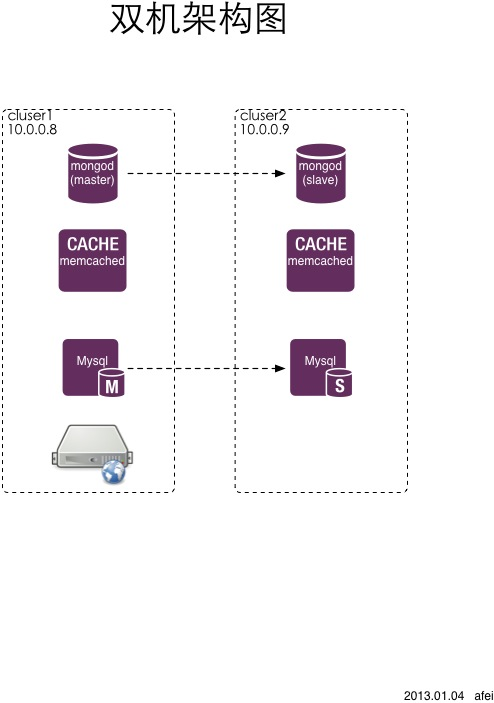

1. web服务器 2. mysql 数据库服务器 3. memcache缓存服务器 4. mongod key-value存储服务器
yum install pcre pcre-devel yum install zlib zlib-devel wget wget http://www.nginx.org/download/nginx-1.3.10.tar.gz tar zxvf nginx-1.3.10.tar.gz cd nginx-1.3.10 ./configure --prefix=/usr/local/nginx make && mak install
wget http://cdn.mysql.com/Downloads/MySQL-5.5/mysql-5.5.29-linux2.6-x86_64.tar.gz tar zxvf mysql-5.5.29-linux2.6-x86_64.tar.gz cp mysql-5.5.29-linux2.6-x86_64 /usr/local/mysql cd /usr/local/mysql/ groupadd mysql useradd -r -g mysql mysql chown -R mysql . chgrp -R mysql . scripts/mysql_install_db --user=mysql chown -R root . chown -R mysql data cp support-files/my-medium.cnf /etc/my.cnf bin/mysqld_safe --user=mysql & cp support-files/mysql.server /etc/init.d/mysql.server bin/mysqladmin -u root password 'your password'
#vim /etc/hosts
10.0.0.9 cluster2
#vim /etc/my.conf
log-bin=master-bin
log-bin-index = master-bin.index
server-id = 1
service mysql.server restart
/usr/local/mysql/bin/mysql -u root -p
mysql> CREATE USER repl_user;
mysql> GRANT REPLICATION SLAVE ON *.* TO repl_user IDENTIFIED BY '123456';
#vim /etc/hosts
10.0.0.8 cluster1
#vim /etc/my.conf
server-id = 2
relay-log = slave-relay-bin
relay-log-index = slave-relay-bin.index
mysql> CHANGE MASTER TO MASTER_HOST = 'cluster1', MASTER_PORT = 3306, MASTER_USER = 'repl_user', MASTER_PASSWORD = '123456';
mysql> START SLAVE;
wget http://memcached.googlecode.com/files/memcached-1.4.15.tar.gz tar zxvf memcached-1.4.15.tar.gz cd memcached-1.4.15 ./configure --prefix=/usr/local/memcached make && make install
wget http://fastdl.mongodb.org/linux/mongodb-linux-x86_64-2.2.2.tgz tar zxvf mongodb-linux-x86_64-2.2.2.tgz mv mongodb-linux-x86_64-2.2.2 /usr/local/mongo cd /usr/local/mongo mkdir -p /data/db ./bin/mongod
wget http://us1.php.net/distributions/php-5.3.20.tar.gz ./configure --prefix=/usr/local/php --with-mysql=/usr/local/mysql --enable-fpm make && make install